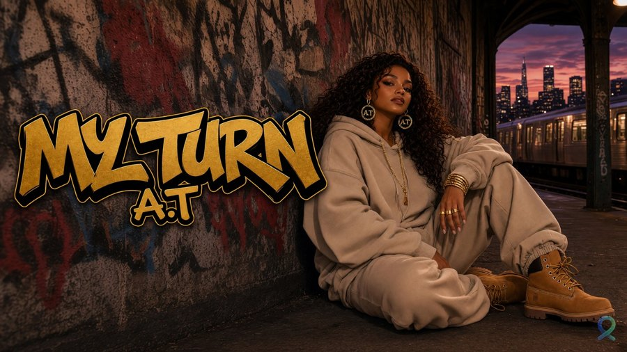

Track 01 · My Turn
My Turn
She was the first one there and the last one to leave. She clapped at every win like the trophy was hers, held the umbrella while the rain soaked her, and somewhere in all that sacrificing she forgot about herself. Not this time. This is her villain era, and she only needs two words. She says them with her chest.
 Watch the official video
Watch the official video
Lyrics
Don't ask me to be smaller, I was made this size
I'm not asking permission, I'm telling you where I'll be
I was the first one there and the last one to leave
Held the umbrella for you while the rain soaked me
Clapped at every win like the trophy was mine
Wrote your name in the stars and erased me from the line
Gave you the best of me, the rest of me, the morning and the midnight
Asked you what you needed while my own heart starved for sunlight
I was patient, I was quiet, let 'em play me like a record
Same old song on repeat till the needle stopped the second
Somewhere in the sacrifice I lost my own reflection
Gave away my future like a gift without a question
Ain't no anger in my voice, just a woman who remembered
Every flower that I planted was for somebody's December
Now I'm watering my garden, now I'm putting me in season
If you need a villain in your story, here's your reason
I'm not asking permission
They gonna say I'm selfish, let 'em, let 'em
They gonna say I changed, I should've, I should've
Showed up for everybody, celebrated everybody
Gave up everything I had, now it's
My turn, my turn, baby it's my turn
Ain't no other chance, you ran out, now I learned
If they need a villain, I'mma give 'em one tonight
Say it with my chest, it's my turn, it's my life
Remember when I'd answer on the very first ring?
Now you calling me and wondering why I don't do a thing
I ain't cold, I'm just closed, like a shop after hours
I gave away the keys but I'm taking back the towers
They said you so strong so they leaned on my back
Till my spine wrote a letter saying girl, we can't do that
Every favor was a loan that I never got repaid
Every promise was a check that the bank wouldn't cash
So I'm cashing in on me now, interest on the patience
Ten years in the waiting room, I'm done with the waiting
Ain't no sign from the sky, I don't need another omen
I'm the sign, I'm the storm, I'm the woman in the moment
And the ones who used to love me when I didn't love myself
Are the first ones saying now I think too highly of myself
I'm not asking permission
They gonna say I'm selfish, let 'em, let 'em
They gonna say I changed, I should've, I should've
Showed up for everybody, celebrated everybody
Gave up everything I had, now it's
My turn, my turn, baby it's my turn
Ain't no other chance, you ran out, now I learned
If they need a villain, I'mma give 'em one tonight
Say it with my chest, it's my turn, it's my life
They gonna say you selfish? Let 'em
They gonna say you changed? I should've
You don't get another chance? You ran out
You need another sign? I need to say it with my chest
I'm not asking permission, I'm telling you where I'll be
I'm the villain at the end of your favorite little story
Where the girl who held the door finally walked into the glory
I ain't asking for permission, I ain't waiting on the blessing
I'm the lesson you ain't learn while you was busy second guessing
Picture me in Harlem with the sunset on my shoulders
Every year I gave away came back to me as older, bolder
I love you, I just love me more, that's grown woman arithmetic
Put myself on top of the list and baby I'm sticking with it
I'm not asking permission
They gonna say I'm selfish, let 'em, let 'em
They gonna say I changed, I should've, I should've
Showed up for everybody, celebrated everybody
Gave up everything I had, now it's
My turn, my turn, baby it's my turn
Ain't no other chance, you ran out, now I learned
If they need a villain, I'mma give 'em one tonight
Say it with my chest, it's my turn, it's my life
It ain't revenge, it's arrival
I'm not asking permission, I'm telling you where I'll be
I was always gonna choose me
My turn
Written by Grey Beard and A.T. ℗ & © 2026 Threadia AI, Inc. All rights reserved.